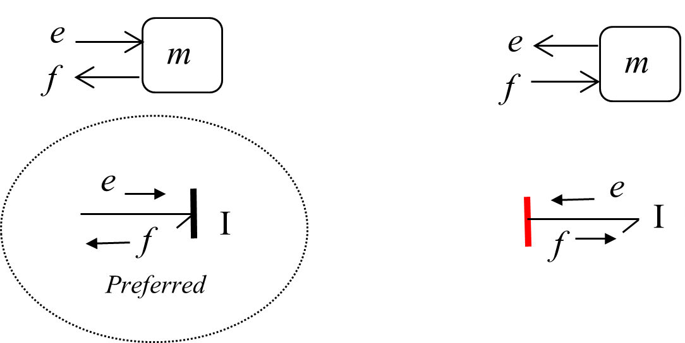
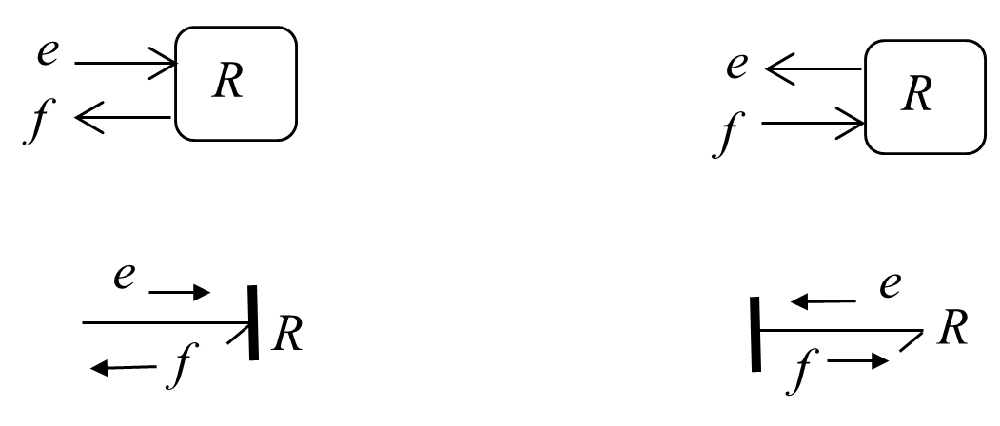
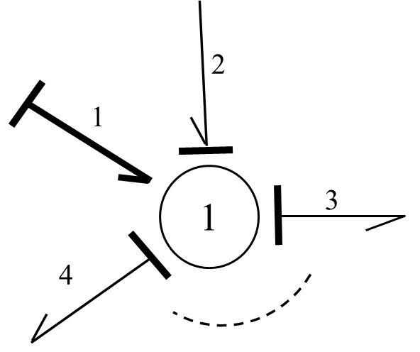

键合图
目标
- 了解键合图是什么
- 了解键合图的基本要素
介绍
在工程系统中，当能量以一种形式向另一种形式转换时，所有的系统都共享一套在其组建间传输和分布能量的物理现象。根据热力学第一定律，系统的总能量保持不变。1959年，Henry Paynter使用了热力学第一定律和系统通用特性，创建了一种分析和建模多领域工程系统的通用的图方法，即键合图（BG）
键合图通过图建模来表达一个系统。针对一个双向的能量/动力交换，键合图方法给每个系统组件指定端口（通信点），并通过键（通信路径和方向）来连接端口和邻接组件。每个组件接收/发送一个数量的effort（势），并且同时发送/接收另一个数量的flow（流）。势和流的乘积为功率，或者说是能量变化率。举例：在机械系统中，力是effort，速度是flow；在电气系统中，电压是effort，电流是flow。键的集合，包括相关的系统组件本构规则、约束和边界条件，组成了系统的BG模型。构建一个BG模型需要求9个基本元素，它们可以构建表达系统动态行为的BG模型。构建出的BG模型可以清楚地展示系统的运动学（flow的连续流）和动力学（effort的连续流），并且可以用来提取出描述系统动态行为的方程。
功率可以理解为单位时间内物体做功或能量变化的快慢
系统的行为随着时间变化，所以BG模型中最关心的就是能量/功率的时间变化率。能量\(\varepsilon\)和功率\(p\) 的关系为：
\(P(t)=\displaystyle\frac{\varepsilon (t)}{dt}\quad or\quad \varepsilon(t)=\int P(tdt)\)
根据热动力学，系统能量的总变化等于做的功 \(W\) 和热量 \(Q\) 的和：
\(d\varepsilon=Pdt=\delta W+\delta Q\)
概念区分
Kinetics(physics & engineering)强调运动和导致运动原因之间的关系。尤其是，力与力矩（forces and torques）。在物理学课本（理论界）中，analytical dynamic已经取代了kinetics，但是在工程领域，还是经常能看到kinetics这个单词。
Dynamic强调“力“， 要追究运动背后的driving force，即研究运动与“力”的关系，基本所有dynamic的方程的出发点都是牛顿定律，如F=ma，等式的一边是力F，另一边是运动速度v或加速度a，可以把dynamic看成牛顿定律的推广。研究动力学问题必须知道系统的拉格朗日量或者哈密顿量。一些对时间的微分方程我们也经常称之为dynamic system(动力系统)。
Kinematics强调”运动“，是经典力学的一个分支，在研究的过程中不考虑是什么原因（也就是不考虑力）导致了运动。运动学研究的过程就是测量和计算运动量（kinematic quantities）并用来描述运动的过程。运动量包括：速度，加速度，位移，时间，和轨迹。
图的区别
键合图是物理动态系统的一个图形表示，它可以将系统转换到一个状态空间表达。它和块图（block diagram）/信号流图（signal-flow graph）很相似，但主要的区别在于键合图中的弧线表示物理能量的双向交换，块图和信号流图则只表达单向的信息流。
因果性
根据参考资料[Bond Graph]，键合图的一大特征就是因果性。在建模时需要在端口（ports）间指定其因果性（信息流方向）。
所以键合图到底可不可以做非因果建模？
多物理系统
BG建模方法中与不同系统相关的模拟量和单位：
机械系统中：
- C/R元素给系统作用力(e)，收到速度(f)。目的是拿到速度(f)的表达式，因为它是位移(q)导数的表达式\(\displaystyle\frac{dx}{dt}=v\rightarrow \dot q=f...p...\)
- I元素给系统作用速度(f)，收到力(e)。目的是拿到力(e)的表达式，因为它是动量(p)导数的表达式\(\displaystyle\frac{dP}{dt}=F\rightarrow \dot p=e...q...\)
- 连立\(q\)和\(p\)的微分方程组可以求结果
电学系统中：
- C/R元素给系统作用电压(e)，收到电流(f)。目的是拿到电流(f)的表达式，因为它是电荷(q)导数的表达式\(\displaystyle\frac{dq}{dt}=i\rightarrow \dot q=f...p...\)
- I元素给系统作用电流(f)，收到电压(e)。目的是拿到电压(e)的表达式，因为它是磁通量(p)导数的表达式\(\displaystyle\frac{d\psi}{dt}=E\rightarrow \dot p=e...q...\)（闭合电路中电动势的大小，和穿过这一电路的磁通量的变化率成正比。磁通量的的物理意义是，穿过一个面的磁感线的条数。）
- 连立\(q\)和\(p\)的微分方程组可以求结果
| Systems | Effort (e) | Flow (f) | Displacement (\(q=\sum fdt\)) | Momentum (\(p=\int edt\)) |
|---|---|---|---|---|
| 机械平移 mechanical-translational | 力 force [牛 \(N\)] | 速度 velocity [\(m/s\)] | 距离 distance [\(m\)] | 动量 momentum [\(kg.m/s\)] |
| 旋转机械 Rotational mechanical | 扭矩 torque [\(N.m\)] | 角速度 angular velocity [\(rad/s\)] | 角度 angle [\(rad\)] | 角动量 angular momentum [\(kg.m^2/s\)] |
| 液压 hydraulic | 压强 pressure [\(Pa\)] | 体积流率 volume flow rate [\(m^3/s\)] | 体积 volume [\(m^3\)] | 液压动量 hydraulic momentum [\(Pa.s\)] |
| 热学 thermal / 热力学 thermodynamics | 温度 temperature [\(K\)] | 熵变化 entropy change [\(J/K.s\)] | 熵 entropy [\(J/K\)] | - |
| 热流体 thermo-fluid | 焓 enthalpy (specific) [\(J\)] | 质量流率 mass flow rate [\(kg/s\)] | 质量流 mass flow [\(kg\)] | flow momentum |
| 电学 electrical | 电压 voltage [\(V\)] | 电流 current [\(A\)] | 电容 charge [\(C\)] | flux linkage [\(V.s\)] |
| 电磁学 magnetics | 电磁力 magnetic force [\(A\)] | 磁通量率 magnetic flux rate [\(Wb/s\)] | 磁通量 magnetic flux [\(Wb\)] | - |
| 化学 chemical | 化学能 chemical potential [\(J/mol\)] | 摩尔流率 mole flow rate [\(mol/s\)] | 摩尔流量 mole flow [\(mol\)] | - |
九个基本元素
构建一个物理系统的BG模型需要考虑系统中的能量保存、传输和转换。
-
对于能量储存，考虑两个元素：动力学中的惯性元素 \(I-Element\) 和势能元素的 \(C-Element\) 的能量储存。
-
对于能量关于，考虑一个元素：摩擦或者电阻元素 \(R-Element\)
-
对于能量源汇，在系统的边界上由两个元素表示：势 \(S_e\) 和流 \(S_f\)
-
对于能量分布，管理系统中的能量分布定义两个元素作为结点，\(junction1\) 和 \(junction0\)
-
对于能量传输/转换，转换元素 \(TF-Element\) (transformer)和回转元素 \(GY-Element\)(Gyrator)
对于上述每一个BG元素，都有一个由数学模型表达的本构关系。
例如一个线性机械弹簧由势能元素\(C\)表达，它的方程需要遵循胡克定律。然而，一个弹簧的形变可以由受到一个effort引起，例如受到力；也可以由受到一个flow引起，例如速度。我们可以使用表达因果的图线（causality strokes）来表达因果分配（causality assignment）。需要对BG模型的每一个点都应用因果分配。
一个例子：
- R-Element (damper)
- C-Element (spring)
- I-Element (mass)
- TF-Element (lever)
- GY-Element (gyroscope)
惯性元素I - 动能储存
\(I-Element\) 是一个被动元素，它接受一个输入，返回一个信号。只有一个端口连接系统。
机械系统中，质量体是一个\(I\)元素；电气系统中，电感器是一个\(I\)元素。
下图中倾向于使用左侧的方式，即接受\(e\)并积分，然后发送\(f\)，effort-in，积分因果。

根据牛顿定律，数学上的表达为：\(F=m\displaystyle\frac{dv}{dt}=m\dot v\)，其中，\(F\)是受到的力，\(v\)是\(I\)元素的速度。
BG模型的记号为：\(e=I\displaystyle\frac{df}{dt}=I\dot f\)，其中，输入为\(\displaystyle\frac{e}{I}\)，输出为\(\dot f\)，输入等于输出：\(\dot f=\displaystyle\frac{e}{I}\)，公式是一阶ODE。
对两边积分得到\(\displaystyle\int \dot fdt=\frac{1}{I}\int edt\)，其中，力对时间的积分为冲量\(\displaystyle\int edt=P\)
可以得到\(f=\displaystyle\frac{P}{I}\)
根据上式，速度等于动量除以质量，虽然这一点很明确，但是在BG模型中，从物理的角度来理解更为重要：
effort的积分收集了所有的输入数据
下图左边是块图的表达（block diagram），右边是BG的表达。
总之，\(I\)元素在BG模型中的本构方程为：
\(f=\displaystyle\frac{P}{I}=\frac{1}{I}\int edt\)
其中，\(\displaystyle\int edt=P\) 这一项叫做状态变量（state variable）
势能元素C - 势能储存元素
\(C-Element\) 是一个被动元素，它接受一个输入，返回一个信号。只有一个端口连接系统。
机械系统中，弹簧是一个\(C\)元素；电气系统中，电容是一个\(C\)元素。
下图中倾向于使用右侧的方式，即接受\(f\)，然后发送\(e\)并积分，effort-out，积分因果。
举一个弹簧的例子：\(F=kx=k\displaystyle\int vdt\)，其中，\(k\)是弹簧刚度。
BG模型的记号为\(e=kq=\displaystyle\frac{q}{c}=\frac{1}{c}\int fdt,\ c=\frac{1}{k}\)
其中，\(\displaystyle\int fdt\) 为状态变量
摩擦元素R - 能量耗散元素
\(R-Element\) 是一个被动元素，它接受一个输入，返回一个信号。只有一个端口连接系统。
机械系统中，阻尼器是一个\(R\)元素；电气系统中，电阻是一个\(R\)元素。
下图显示，\(R\)元素的输入可以是effort，也可以是flow。

举一个摩擦力的例子，\(F=Rv\)，其中，\(R\)为阻尼系数。
BG模型的记号为：\(e=Rf\)
\(R\)元素的本构方程：
-
如果是effort-in，那么\(f=\displaystyle\frac{e}{R}\)
-
如果是effort-out，那么\(e=Rf\)
源元素Se/Sf - 边界输入元素
下图分别为effort-in和flow-in在BG模型中的符号表达
1- 和0-节点 - 分布约束元素
在BG模型中，系统中约束能量分布的两个元素\(1\)和\(0\)节点元素，它们有多个端口。
下图是一个\(1-junction\)元素，它可以是一个流均衡器（flow equalizer），也可以是一个势收集器（effort summator）组件，只能通过强键接受一个流信号（flow signal），这个流信号为1，是强键，\(1-junction\)元素分配来自强键的flow，它符合：
\(\left \{\begin{aligned}&f_1=f_2=...=f_N\\&\sum_{i=1}^Ne_i=0\end{aligned}\right.\)

下图是一个\(0-junction\)元素，它可以是一个势均衡器（effort equalizer），也可以是一个流收集器（flow summator）组件。只能通过强键接受一个势信号（effort signal）。这个势信号为1，是强键，\(0-junction\)元素分配来自强键的effort，它符合：
\(\left \{\begin{aligned}&e_1=e_2=...=e_N\\&\sum_{i=1}^Nf_i=0\end{aligned}\right.\)
转换元素TF和转变元素GY - 能量转换元素
在物理工程系统中，能量可能由一些组件转换成另一种，但同时保持能量不变。它们有两个端口，输入端口输入一个量，输出端口输入转换后的量。机械系统中，杠杆和齿轮箱是转换元素\(TF\)；电气系统中，变压器和发动机为转换元素\(TF\)。
转换元素\(TF\)的输入和输出物理量类型相同，入下图，\(TF\)接受一个effort和一个flow输入，输出一个转换后的effort和flow。当然，转换参数\(\lambda\)需要事先定义好，
如果\(f_1\)作为输入，\(f_2\)作为输出，可以写成\(f_2=\lambda f_1\)。基于总能量不变，\(e_1f_1=e_2f_2\)，输出的effort为：\(e_1=(f_2/f_1)e_2=\lambda e_2\)。
同理，如果\(e_1\)作为输入，\(e_2\)作为输出，可以写成\(f_1=\lambda^{-1}f_2\)
转变元素\(GY\)的输入是一类物理量，输出则是另一类物理量。
同上，如果\(f_1\)作为输入，\(f_2\)作为输出，则\(f_2=\kappa f_1\)
同理，如果\(e_1\)作为输入，\(e_2\)作为输出，可以写成\(f_1=\kappa^{-1}f_2\)
系统状态变量
BG模型的最终目的是求解系统方程，系统方程可能是二阶或者二阶以上的ODE。然而，当我们针对状态变量（state variables）来写方程时，我们会得到一个一阶ODE。状态变量唯一地、充分地对系统动态进行了描述。
当我们从BG模型抽取系统方程时，也会涉及额外的代数方程。所以，我们会得到一个系统的微分代数方程（DAE），好处是ODE为一阶。
惯性元素I状态变量
惯性元素\(I\)的总能量可以写成元素的功率对时间的积分：\(\displaystyle\int f\cdot edt=\int(edt)f\)，鉴于effort与时间的乘积为冲量：\(edt=dp\)，可以得到\(\displaystyle\int(edt)f=\int fdp\)，也就是说，惯性元素的总能量是flow将动量\(p\)作为状态变量的积分。
根据牛顿第二定律，\(f=\displaystyle\frac{p}{I}\)，那么总能量：
\(Energy=\displaystyle\frac{1}{I}\int pdp=\frac{p^2}{2I}\)
上式表明，储存在惯性元素\(I\)中的总能量，唯一地由其动量\(p\)决定，即广义动量（generalized momentum）。
如下图所示，求解的步骤为：
- 确定BG模型中的\(I\)元素输入和输出，图中输入为力（effort）
- 计算状态变量，图中为计算\(I\)元素的冲量\(p\)
- 根据物理规则计算输出，图中为牛顿第二定理，计算得到输出速度为\(f=\displaystyle\frac{p}{m}\)
势能元素C状态变量
和惯性元素一样计算，可以得到
\(Energy=\displaystyle\frac{q^2}{2c}\)，\(q\)为广义的位移变化
上式表明，储存在势能元素\(C\)中的总能量，唯一地由其位移\(q\)决定，即广义位移（generalized displacement）
如下图所示，求解的步骤为：
- 确定BG模型中的\(C\)元素输入和输出，图中输入为速度（flow）
- 计算状态变量，图中为计算\(C\)元素的位移\(q\)
- 根据物理规则计算输出，图中为胡克定律，计算得到输出力为\(e=\displaystyle\frac{q}{c}\)

建模流程
构建一个包含机械、电气和液压系统的BG模型通常包含以下步骤：
- 识别物理系统元件/类型（能量储存、源元素、耗散元件等）
- 识别系统的自由度（DOF - degrees of freedom），该步骤虽然为可选，但是依然推荐
- 识别并且列出需要的BG元素
- 识别物理系统的物理点/节点
- 机械系统中的速度/力：平移的
- 机械系统中的角速度/扭矩：旋转的
- 电气系统中的电压/电流：电路
- 液压系统中的压强/流量：流体网络
- 为步骤4中的条目指定合适的多端口节点（multi-port junction）元素
- 为速度、角速度、电流和液体流指定“1”
- 为力、电压、压强指定“0”
- 使用BG元素和power bond连接相关元素到步骤5中的节点元素
- 为步骤5中的条目指定合适的多端口节点元素
- 为相对速度和角速度指定“0”
- 为电压降和压强降指定“1”
- 为能量不变指定\(TF\)和\(GY\)元素
- 使用BG元素和强键连接相关元素到步骤7中的节点元素
- 定义符号约定，并连接所有剩余的power bond
- 应用所有的因果分配（积分因果为最高优先级）
- 在20-sim中画出并构建BG模型
- 使用包含的BG模型，执行仿真和设计